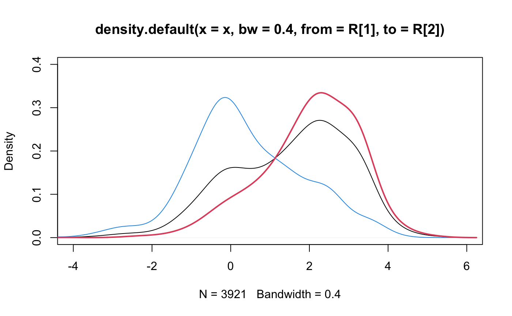

email.RdThese data represent incoming emails for the first three months of 2012 for an email account (see Source).
email
A email (email_sent) data frame has 3921 (1252)
observations on the following 21 variables.
Indicator for whether the email was spam.
Indicator for whether the email was addressed to more than one recipient.
Whether the message was listed as from anyone (this is usually set by default for regular outgoing email).
Indicator for whether anyone was CCed.
Indicator for whether the sender had been sent an email in the last 30 days.
Time at which email was sent.
The number of images attached.
The number of attached files.
The number of times a dollar sign or the word “dollar” appeared in the email.
Indicates whether “winner” appeared in the email.
The number of times “inherit” (or an extension, such as “inheritance”) appeared in the email.
The number of times “viagra” appeared in the email.
The number of times “password” appeared in the email.
The number of characters in the email, in thousands.
The number of line breaks in the email (does not count text wrapping).
Indicates whether the email was written using HTML (e.g. may have included bolding or active links).
Whether the subject started with “Re:”, “RE:”, “re:”, or “rE:”
Whether there was an exclamation point in the subject.
Whether the word “urgent” was in the email subject.
The number of exclamation points in the email message.
period_messThe number of periods in the message.
signoffWhether a sign-off of “Cheers”, “Regards”, or “Best” (also, “Best Regards”) was used.
Factor variable saying whether there was no number, a small number (under 1 million), or a big number.
David Diez's Gmail Account, early months of 2012. All personally identifiable information has been removed.
~~ OpenIntro Statistics, openintro.org ~~
e <- email #______ Variables For Logistic Regression ______# # Variables are modified to match # OpenIntro Statistics, Second Edition # As Is (7): spam, to_multiple, winner, format, # re_subj, exclaim_subj # Omitted (6): from, sent_email, time, image, # viagra, urgent_subj, number # Become Indicators (5): cc, attach, dollar, # inherit, password e$cc <- ifelse(email$cc > 0, 1, 0) e$attach <- ifelse(email$attach > 0, 1, 0) e$dollar <- ifelse(email$dollar > 0, 1, 0) e$inherit <- ifelse(email$inherit > 0, 1, 0) e$password <- ifelse(email$password > 0, 1, 0) # Transform (3): num_char, line_breaks, exclaim_mess #e$num_char <- cut(email$num_char, c(0,1,5,10,20,1000)) #e$line_breaks <- cut(email$line_breaks, c(0,10,100,500,10000)) #e$exclaim_mess <- cut(email$exclaim_mess, c(-1,0,1,5,10000)) g <- glm(spam ~ to_multiple + winner + format + re_subj + exclaim_subj + cc + attach + dollar + inherit + password, # + #num_char + line_breaks + exclaim_mess, data=e, family=binomial) summary(g)#> #> Call: #> glm(formula = spam ~ to_multiple + winner + format + re_subj + #> exclaim_subj + cc + attach + dollar + inherit + password, #> family = binomial, data = e) #> #> Deviance Residuals: #> Min 1Q Median 3Q Max #> -1.5609 -0.4115 -0.3536 -0.0981 3.7113 #> #> Coefficients: #> Estimate Std. Error z value Pr(>|z|) #> (Intercept) -0.83623 0.09620 -8.692 < 2e-16 *** #> to_multiple -2.88364 0.31211 -9.239 < 2e-16 *** #> winneryes 1.70380 0.32539 5.236 1.64e-07 *** #> format -1.59018 0.12387 -12.838 < 2e-16 *** #> re_subj -2.90816 0.37077 -7.844 4.38e-15 *** #> exclaim_subj 0.13549 0.22682 0.597 0.55028 #> cc -0.48628 0.30542 -1.592 0.11135 #> attach 0.97903 0.21696 4.512 6.41e-06 *** #> dollar -0.05816 0.15891 -0.366 0.71435 #> inherit 0.20926 0.31969 0.655 0.51275 #> password -1.49295 0.52947 -2.820 0.00481 ** #> --- #> Signif. codes: 0 ‘***’ 0.001 ‘**’ 0.01 ‘*’ 0.05 ‘.’ 0.1 ‘ ’ 1 #> #> (Dispersion parameter for binomial family taken to be 1) #> #> Null deviance: 2437.2 on 3920 degrees of freedom #> Residual deviance: 1948.3 on 3910 degrees of freedom #> AIC: 1970.3 #> #> Number of Fisher Scoring iterations: 7 #>#> Start: AIC=1970.26 #> spam ~ to_multiple + winner + format + re_subj + exclaim_subj + #> cc + attach + dollar + inherit + password #> #> Df Deviance AIC #> - dollar 1 1948.4 1968.4 #> - exclaim_subj 1 1948.6 1968.6 #> - inherit 1 1948.7 1968.7 #> <none> 1948.3 1970.3 #> - cc 1 1951.0 1971.0 #> - password 1 1960.2 1980.2 #> - attach 1 1967.2 1987.2 #> - winner 1 1972.4 1992.4 #> - re_subj 1 2089.6 2109.6 #> - format 1 2115.9 2135.9 #> - to_multiple 1 2118.7 2138.7 #> #> Step: AIC=1968.39 #> spam ~ to_multiple + winner + format + re_subj + exclaim_subj + #> cc + attach + inherit + password #> #> Df Deviance AIC #> - exclaim_subj 1 1948.7 1966.7 #> - inherit 1 1948.7 1966.7 #> <none> 1948.4 1968.4 #> - cc 1 1951.1 1969.1 #> - password 1 1960.3 1978.3 #> - attach 1 1967.7 1985.7 #> - winner 1 1972.4 1990.4 #> - re_subj 1 2089.7 2107.7 #> - format 1 2116.5 2134.5 #> - to_multiple 1 2119.7 2137.7 #> #> Step: AIC=1966.66 #> spam ~ to_multiple + winner + format + re_subj + cc + attach + #> inherit + password #> #> Df Deviance AIC #> - inherit 1 1948.9 1964.9 #> <none> 1948.7 1966.7 #> - cc 1 1951.3 1967.3 #> - password 1 1960.5 1976.5 #> - attach 1 1967.8 1983.8 #> - winner 1 1973.2 1989.2 #> - re_subj 1 2091.8 2107.8 #> - format 1 2117.2 2133.2 #> - to_multiple 1 2119.9 2135.9 #> #> Step: AIC=1964.93 #> spam ~ to_multiple + winner + format + re_subj + cc + attach + #> password #> #> Df Deviance AIC #> <none> 1948.9 1964.9 #> - cc 1 1951.5 1965.5 #> - password 1 1961.0 1975.0 #> - attach 1 1968.0 1982.0 #> - winner 1 1973.9 1987.9 #> - re_subj 1 2094.1 2108.1 #> - format 1 2118.6 2132.6 #> - to_multiple 1 2120.4 2134.4#______ Splitting num_char by html ______# x <- log(email$num_char) bw <- 0.004 R <- range(x) + c(-1, 1) wt <- sum(email$format)/nrow(email) htmlAll <- density(x, bw=0.4, from=R[1], to=R[2]) htmlNo <- density(x[email$format != 1], bw=0.4, from=R[1], to=R[2]) htmlYes <- density(x[email$format == 1], bw=0.4, from=R[1], to=R[2]) htmlNo$y <- htmlNo$y #* (1-wt) htmlYes$y <- htmlYes$y #* wt + htmlNo$y plot(htmlAll, xlim=c(-4, 6), ylim=c(0, 0.4))